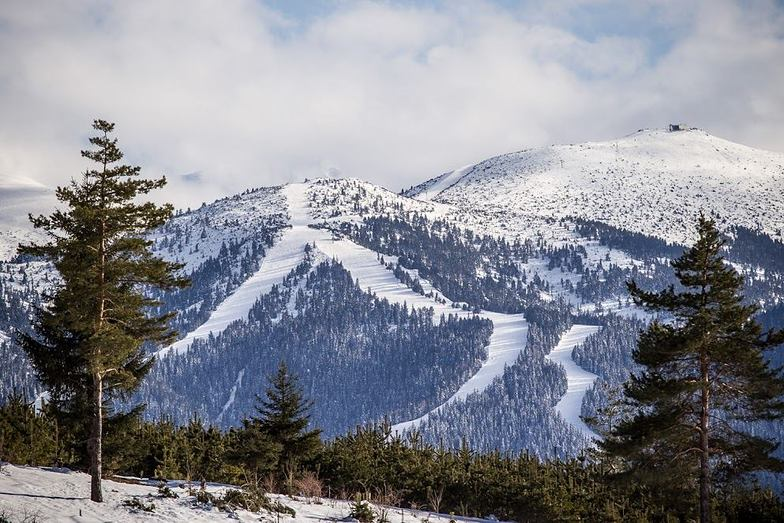
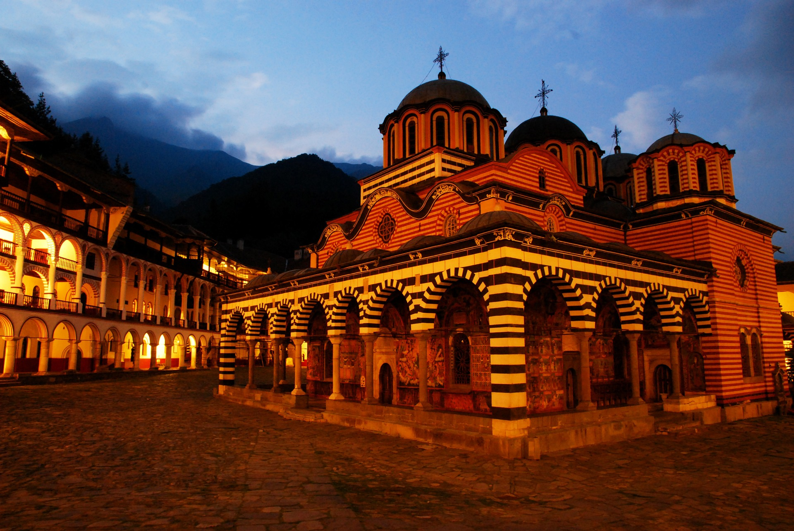
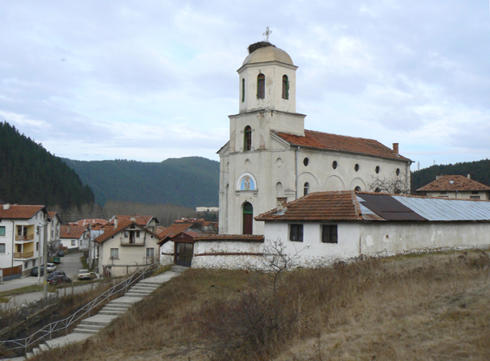
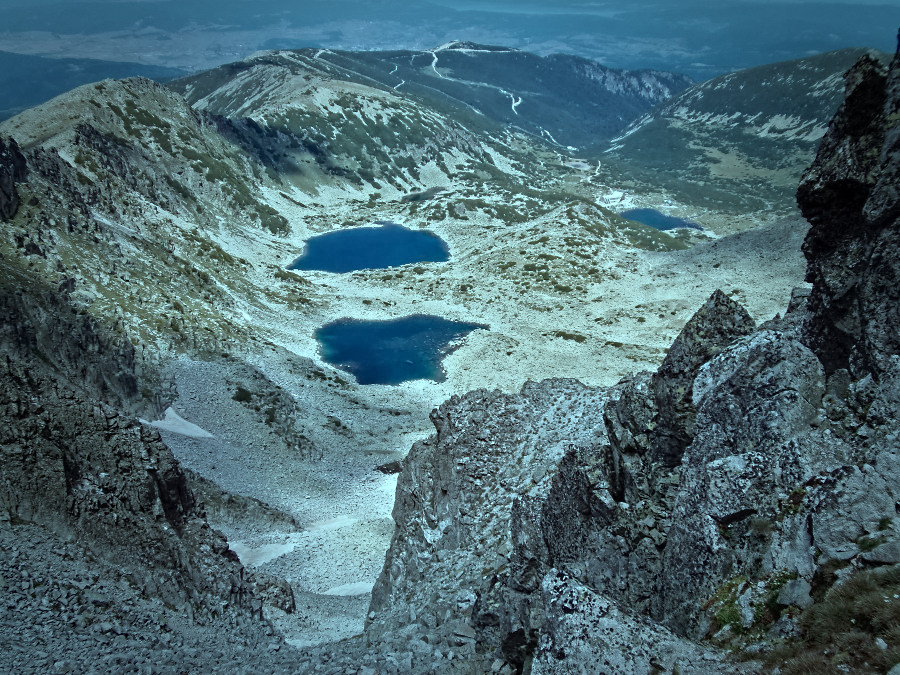
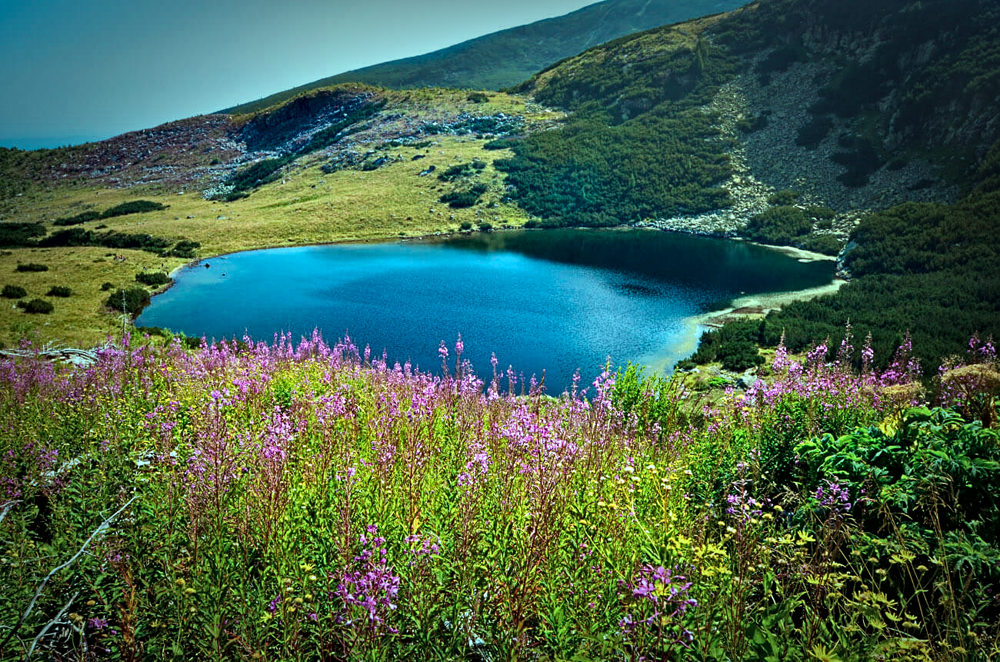
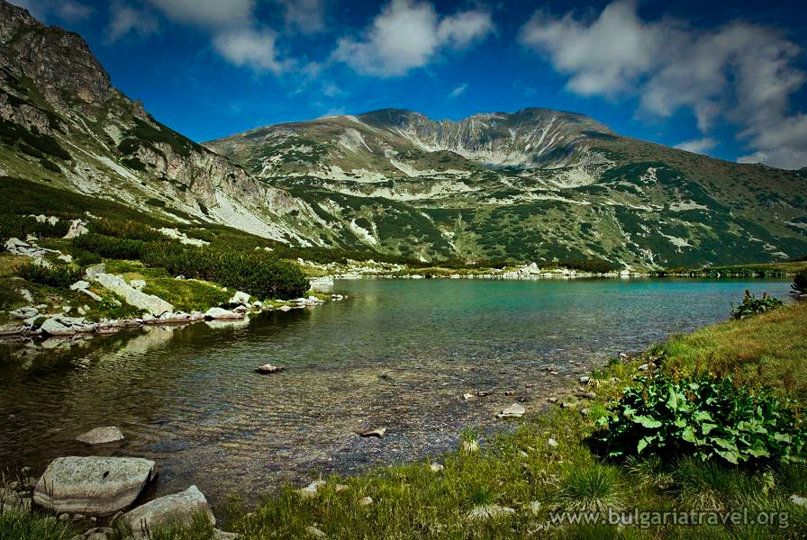
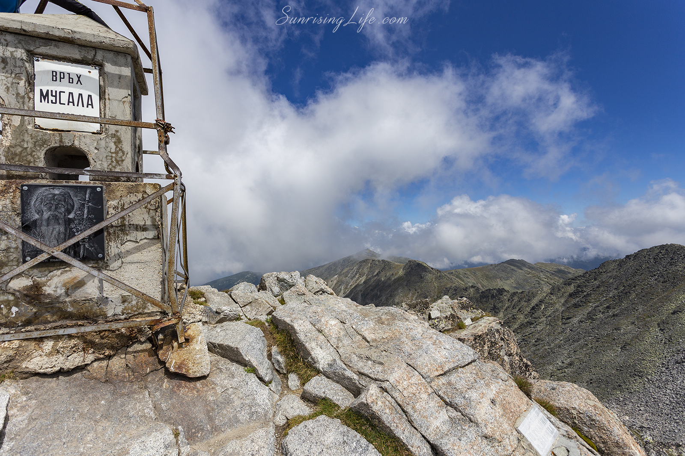
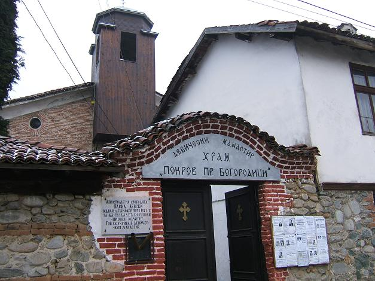

Back

Borovets
Borovets (until June 29, 1942 Chamkoria) is the first resort in Bulgaria. It is located in the municipality of Samokov,
Sofia area.

Rila monastery
The Rila Monastery is a Bulgarian stauropegial monastery, one of the most important cultural monuments in
Bulgaria,
symbol of
the country
included in the UNESCO World Heritage List.
It is located in southwestern Bulgaria, Kyustendil district, Rila municipality.
It was founded in the 10th century by St. John of the Rila the Wonderworker in the upper reaches of the Rila River.

Holy water
The chapel "St. Georgi Фis painted with wonderful icons, there is a fountain" Holy Fountain ", from which gushes
life-giving cold spring water, there are places for relaxation and privacy. On Sunday, this wonderful place opened its
doors with the blessing of Patriarch Neophyte, conveyed by His Eminence Bishop Polycarp, who made a solemn consecration
of the chapel.

St. Spas
The church "St. ascension of the Lord Ф, better known today
the name "Saint Spas" in Madjare is classified as an architectural-special and artistic real estate
cultural value from
the new time
with a category of local significance.

The 7 Rila Lakes
The Seven Rila Lakes is a group of lakes of glacial origin located in the Rila Mountains.
This is the most visited lake group by tourists in Bulgaria and is one of the hundred national tourist groups object.
The lakes are
located in Damgsky
part of Northwestern Rila and are located stepwise between 2095 and 2535 m above sea level.
They occupy depressions on the slope of the mountain, as the individual lakes are connected to each other by small ones
streams.

Yonchevo Lake
Yonchevo Lake is located at 2013 m above sea level, below the peak Popova Kapa. The lake is named after
Samokov
artist Hristo Yonchev-Kriskarets.
An avid tourist, he spent the whole summer with his family in the Rila. The lake is known for its presence
of trout.
The path to Yonchevo Lake starts immediately behind the building of Hotel Malyovitsa.
After a steep climb in a sparse pine forest, we go out on the ski slope Rust.

Musalenski lakes
Musalen Lakes (from March 14, 1950, to January 19, 1962, Stalin Lakes)
are a group of seven lakes, located stepwise in the Musalen Circus at an altitude of 2709 m to 2322 m
and belonging
to
the basin of the river Borovetska Bistritsa (Musalenska Bistritsa).

Musala
Musala (formerly Stalin - from March 14, 1950, to January 19, 1962) is the highest mountain peak in
Bulgaria and the
the whole Balkan Peninsula.
The altitude of the Musala peak is 2925.4 m, measured from the level of the port of Varna.
It is 8 m higher than Mitikas peak in Mount Olympus (Greece) and 11 m higher than Mitikas peak.
Vihren in the Pirin Mountains (Bulgaria). Musala has a relative altitude of 2473 m, making it
ranks 7th
in Europe.
Malyovitsa
Malyovitsa is the name of a peak in the northwestern part of Rila Mountain, 2729 m high. The name of the top is
associated with Mallo voivode - a fighter against the enslavers
who died according to legend somewhere in the Malyovishka valley. Another assumption is that the name comes from
Small lakes as well the mountaineers call the lakes at the northeastern foot of the peak. On the oldest maps, the top is
marked with the name Malevitsa.

Convent
The convent in Samokov began its life around 1772 as a small convent
hostel.
It was founded by grandmother Fota, who donated her property to the Rila Monastery, and in her own house
unites a small number
virgin community.
Back